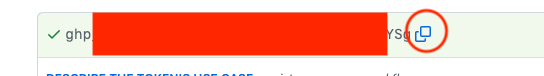
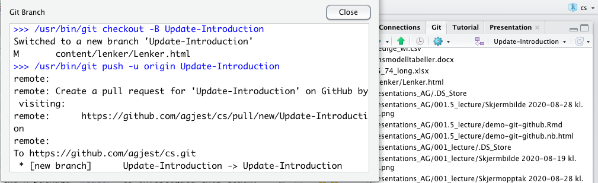

# You have probably allready done this
usethis::use_git_config(user.name = "YourName", user.email = "your@mail.com")Git and Github
Register on Github
- use same email as git
- check with
git config --global --listin terminal
- check with
- some good advice for selecting user_name on Github
- No …,
BigSexyThingshould probably not be your username on Githuband before you ask …
- neither should
big_sexy_thing
- neither should
- No …,
- Go to
www.github.com
Register on Github cont.
This is taken from https://gist.github.com/Z3tt/
- We have to connect RStudio to Github securely, with a token.
- If you haven’t registered yourself in git do:
. . .
- Make sure that you have installed the packages:
usethis
credential
Register on Github cont.
- Generate a token on Github
- Select 90 days unless you enjoy this so much that you want to do it more often.
. . .
## create a personal access token for authentication:
usethis::create_github_token()Register on Github cont.

Register on Github cont.
- Scroll down an click Generate.
. . .
- Copy the new token.
. . .

Register on Github cont.
- Run the command below.
- paste your new token into YourPAT
. . .
# set personal access token:
credentials::set_github_pat("YourPAT")- If asked by your local security system; paste the PAT and click OK
Register on Github cont.
- Verify your settings.
. . .
#### 4. Verify settings ######################################################
usethis::git_sitrep()- Now RStudio should be connected to Github for 90 days.
- DO NOT SAVE A DOCUMENT WITH YOUR PAT IN IT!
Git in RStudio
Den til venstre dreier seg i hovedsak om dokumentet jeg arbeider på nå, mens den til høyre er mer sentrert om hele prosjektet.
Git in RStudio
- Open source Version Control System
- cmd-line client
- we can run this under Terminal in RStudio
- most of what we need is implemented in the Git pane in RStudio (can spare us from some command line bullshittery)
- We can currently (version RStudio 2022.07.1+554 “Spotted Wakerobin”) create branches in the RStudio git-pane, but not merge the branch back into master/main
Git in RStudio cont.
- To merge branches we currently have 2 options
- use the Terminal (
git merge <branch-name>), but first we have to switch back to master/main- This will be the alternative we use
- use a GUI git client (GitAhead or others)
- use the Terminal (
- If we are using Github we can also use a web-based client to merge branches. The Github web-pages is then the client.
Git branches
- An important design-goal for git was lightweight branches
- easy to do
- uses few resources
- Why branch?
- for sw development; always a master ready to ship
- for our use: an (unfinished) printable draft always ready for printing or previewing
- reduces the chance of a merge conflict
- reduces the chance of a push rejection
- Hence we should not commit directly to master/main
Git branches
- Example:
- We want to update, or start writing, the Introduction
- We check out a new branch, perhaps name it Update-Introduction
- We work on the updated introduction in the branch, possibly with several commits
- The document/report is available in master/main, with the old introduction, while we are working
- When we are ready with the updated introduction we merge it back into master/main and master/main gets an updated introduction
- For more info on git branching (using the command line) see:
Git branches in RStudio
newbranch Click the small icon, left of master/main, in the upper right corner

Do not use space in branch-names (i.e.
Update-IntroductionnotUpdate Introduction)
Git branches in RStudio

branching Note that Rstudio does:
/usr/bin/git checkout -B Update-Introductionwhich is the same as:git branch Update-Introduction- create a branch
git checkout Update-Introductionswitch to the branch
Update-IntroductionThere is also a
-bversion. Subtile differences, seeman git-checkoutin Terminal for details (typeqto exit man)
Git branches in RStudio
- Work and commit on branch
Update-Introduction - When finished:
- Select Terminal in lower left paneGit branches in RStudio
Then give the commandl
git checkout masterorgit checkout main- this command switch back to the branch
masterormain(local)
- this command switch back to the branch
git merge Update-Introduction- merge the branch
Update-Introductionintomasterormainbranch
- merge the branch
Git branches in RStudio
- We should now have an updated Introduction.
- Let´s practice branching
Start with your citation project
Create a new branch
IntroductionCheck that you are in the new branch
Write/update your Introduction
Do three commits
- Select the Terminal tab in the lower left pane
- Give the command:
git checkout masterorgit checkout main - Then give the command:
git merge Introduction
Workflow stud. A and B working together
- Stud. A creates new project on Github
- Choose Create Readme.md.
- Gives us some default text, can be edited later
- Switch back to RStudio
- New project, version control
- Back to Github. Copy URL from Code button
- Back to RStudio, paste the URL and Create project
Workflow stud. A and B working together
- Stud. A selects
File > Quarto Document …in RStudiowrite something (use Visual mode)
Save, give Quarto Document a meaningful name
Select Git tab in upper right corner
Commit (check the box for your Quarto Document under Staged)
Pull (get any changes from Github)
- Reduces the change of a merge conflict
Push (send your changes up to Github)
Workflow stud. A and B working together
- Stud. A gives stud. B access to repository
- Stud. B clones repository
- Stud. B edits the Quarto Document
---
title: "new paper"
editor: visual
bibliography: new-paper.bib
---
## Introduction
## Review of literature
## Description of data
## Analysis
## Results
## Conclusion
## ReferencesWorkflow stud. A and B working together
- Stud. B
- save Quarto Document
Commit
Pull
Push
- Time to discuss who do what
- Issues at Github might be useful